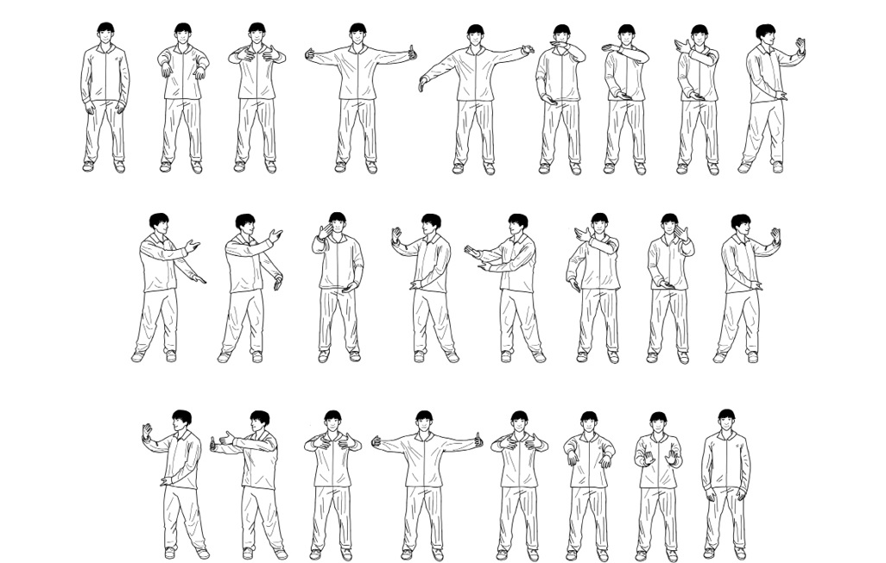
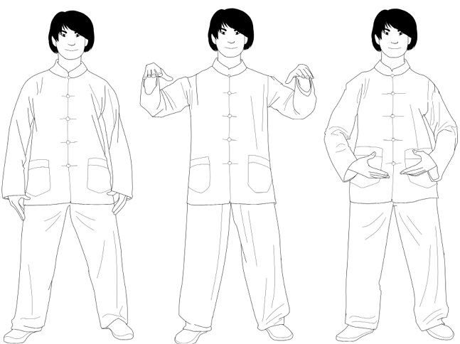
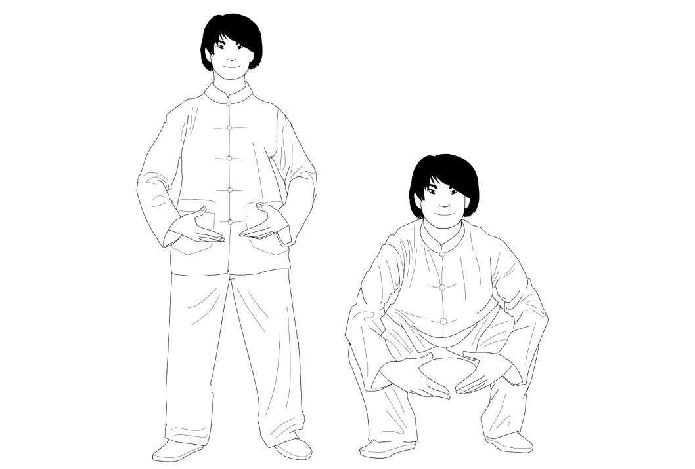

Qigong
Also known as chi kung, its name combines qi (life force, or energy) and gong
(work), indicating that the form works with the individual’s life force. Though
relatively modern, especially under its current name, the art of qigong is based on
the Tao yin, an ancient art meant to foster mental and physical well-being.
The practice began to appear in reports on training and martial arts at the beginning of the twentieth century, and by the 1930s was being used in hospitals.
The Chinese government later popularized it, as it had done with tai chi.
Qigong involves static and dynamic physical exercises that stimulate
respiration in a standing, seated, or reclined position. There are many different
styles of qigong, but all of them seek to strengthen and regenerate qi. Though its
movements are typically gentle, the practice is intense.
Benefits of qigong
According to numerous international scientific studies, qigong—like tai chi and
yoga—offers significant health benefits. The following stand out among those proven through scientific research, as observed by Dr. Kenneth M. Sancier of San Francisco’s Qigong Institute in his article “Medical Applications of Qigong”3:
Modification of brain waves
Improved balance of sex hormones
Lower mortality rate from heart attacks
Lower blood pressure in patients with hypertension
Greater bone density
Better circulation
Deceleration of symptoms associated with senility
Greater balance and efficiency of bodily functions
Increased blood flow to the brain and greater mind-body connection
Improved cardiac function
Reduction in the secondary effects of cancer treatments
Practicing these arts not only keeps us in shape, it also helps extend our lives.
Methods for practicing qigong
In order to practice qigong correctly, we should remember that our life energy
flows through our whole body. We should know how to regulate its many parts:
1. Tyau Shenn: (regulating the body) by adopting the correct posture—it is important to be firmly rooted to the ground
2. Tyau Shyi: (regulating the breath) until it is calm, steady, and peaceful 3. Tyau Hsin: (regulating the mind); the most complicated part, as it implies emptying the mind of thoughts
4. Tyau Chi: (regulating the life force) through the regulation of the three prior elements, so that it flows naturally
5. Tyau Shen: (regulating the spirit); the spirit is both strength and root in battle, as Yang Jwing-Ming explains in 4 The Essence of Taiji Qigong .
In this way, the whole organism will be prepared to work together toward a single goal.
The five elements of qigong
One of qigong’s best-known exercises is a series representing the five elements: One of qigong’s best-known exercises is a series representing the five elements: earth, water, wood, metal, and fire. This series of movements seeks to balance the five currents of energy in order to improve brain and organ function.
There are several ways to do these movements. In this case, we’re following the model of Professor María Isabel García Monreal from the Qigong Institute in
Barcelona.
EARTH
1. Stand with your legs apart and your feet directly below your shoulders.
2. Turn your feet outward slightly to strengthen the posture.
3. Keep your shoulders relaxed and down and your arms loose at your sides, slightly away from your body (this is the Wu Qi, or rooted, posture).
4. As you inhale, raise your arms in front of you until your hands are level with your shoulders, your palms facing down.
5. Exhale as you bend your knees and bring your arms down until your hands are level with your stomach, your palms facing in.
6. Hold this position for a few seconds, focusing on your breath.

WATER
1. Starting from Earth posture, bend your knees into a squat, keeping your chest upright and exhaling throughout.
2. Press your coccyx downward to stretch your lumbar spine.
3. As you inhale, stand to return to Earth posture.
4. 4. Repeat twice, for a total of three.

WOOD
1. Starting from Earth posture, turn your palms upward and open your arms to the side, forming a circle as you inhale, until your hands are level with your clavicle. Turn your hands so that your palms and elbows point downward, while keeping your shoulders relaxed.
2. Reverse the movement as you exhale, making a downward circle with your arms until you reach your initial position.
3. Repeat twice, for a total of three.